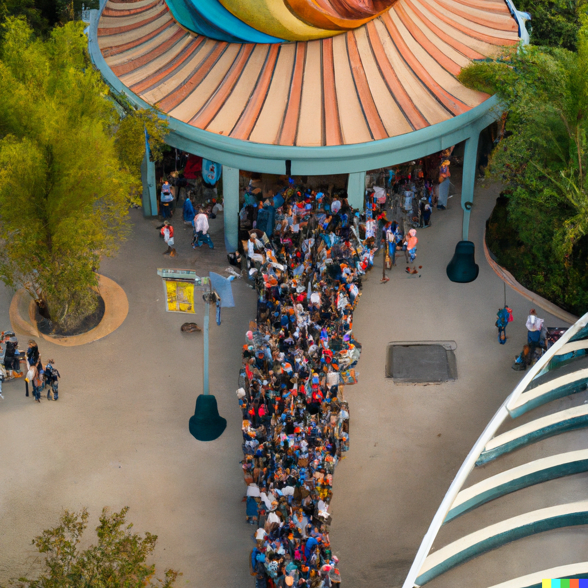
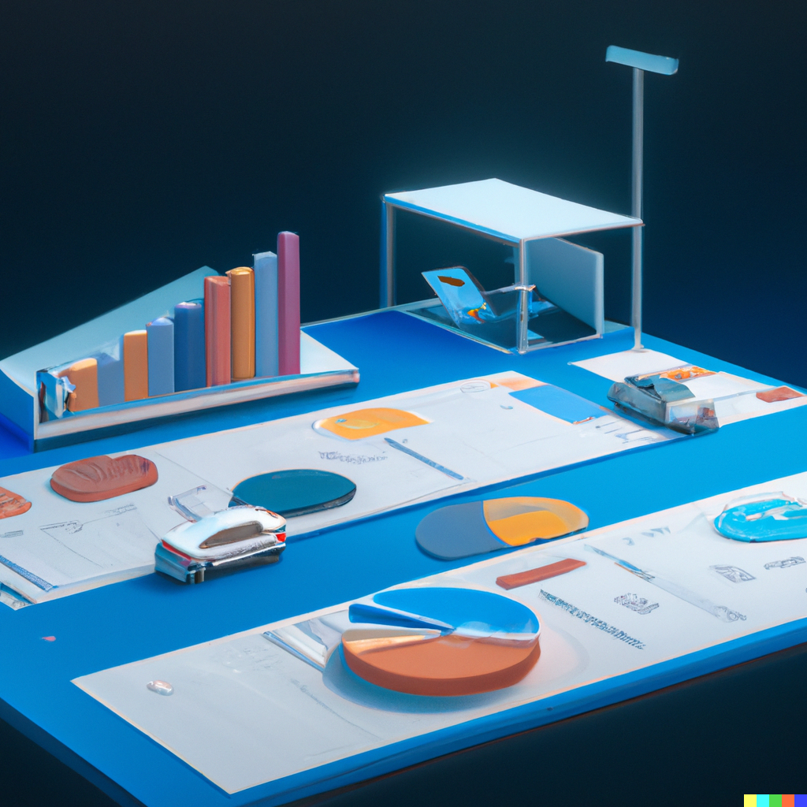

This project was completed entirely within Tableau to explore the data, derive insight, and engineer custom features to better convey my findings.
This project was based upon real-world medical data provided by multiple hospitals pertaining to patients that experienced a cardiac event. I used a variety of tools to clean, explore, and model the data using machine learning techniques.

This project consists of two Python programs. The first program rolls custom dice and provides descriptive statistics for the rolls. The second program reads a file containing numbers and provides descriptive statistics using my own custom functions for each calculation.

Using data scraped from a used car auction website this project involved identifying car brands within the data set that were suitable as independent variables for use in an analysis of variance to identify the correct hypothesis for the research question, and make a recommendation.